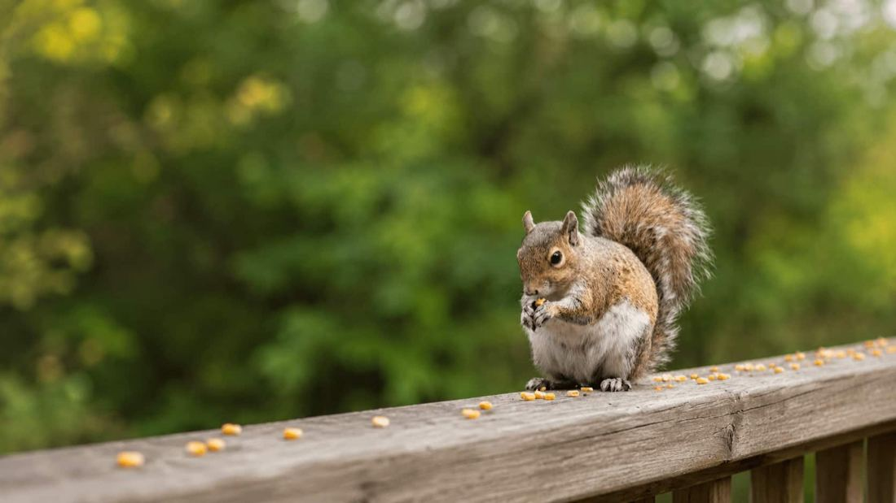
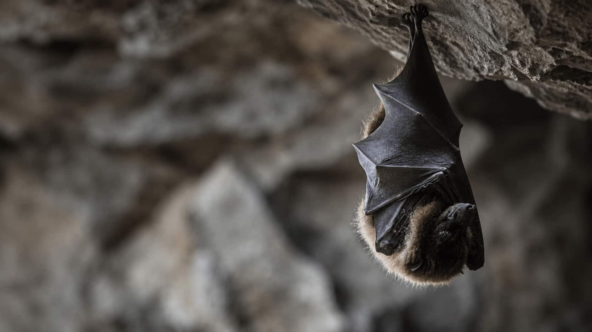
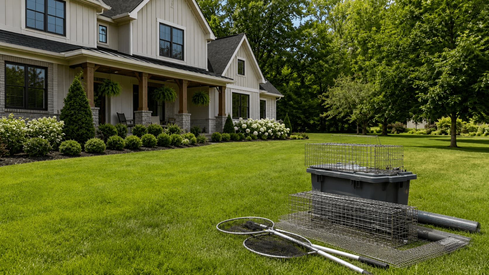
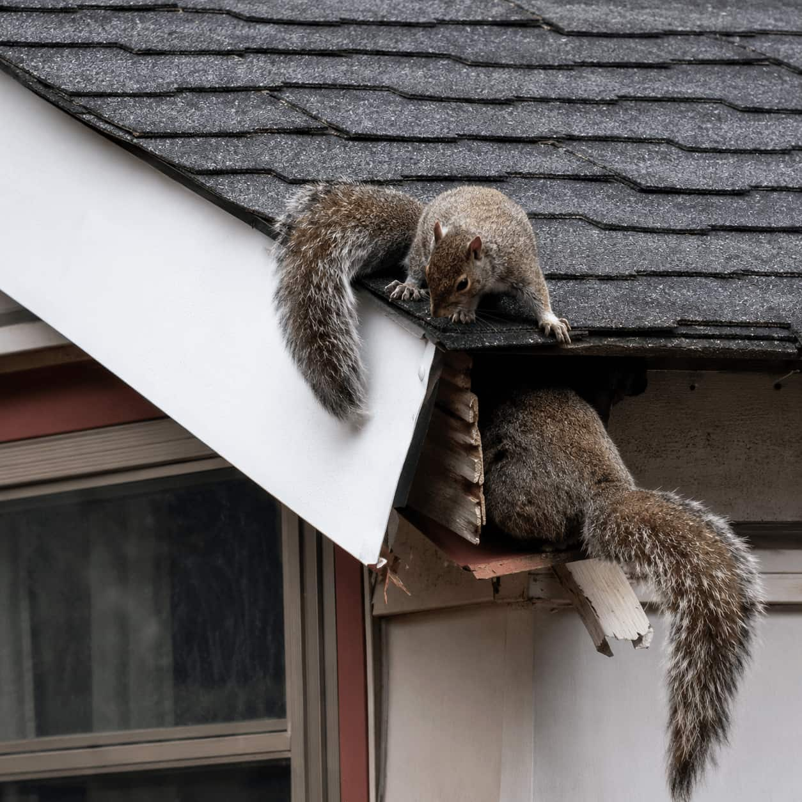

Raccoon Removal
Compare providers who handle raccoon activity, attic concerns, roofline entry points, trash disturbance, and exclusion-related questions.
- Attic and roofline activity
- Soffit or vent entry concerns
- Exclusion-focused provider options
Wildlife service categories
Compare local provider options for common wildlife issues, exclusion needs, property protection questions, and quote paths across the United States.
Issue finder
These common signs can help you choose a service category to compare first.
All services
Each category helps homeowners understand what to compare before choosing a local wildlife removal or exclusion provider.
Compare providers who handle raccoon activity, attic concerns, roofline entry points, trash disturbance, and exclusion-related questions.

Explore provider categories for squirrel activity, scratching sounds, attic nesting, chewed materials, and roofline gap concerns.

Compare providers for bat activity, attic or soffit concerns, droppings, safe removal considerations, and exclusion timing questions.

Review local provider options for bird nesting, vent concerns, rooflines, ledges, droppings, and prevention-focused service categories.

Find provider options for crawl spaces, under-deck activity, yard structures, odors, and practical safety-aware inspection needs.

Compare providers who offer exclusion and repair-related services for vents, soffits, chimneys, crawl spaces, gaps, and other entry points.
Entry points
Wildlife concerns often involve small gaps or vulnerable exterior areas. Comparing exclusion questions can help homeowners understand prevention options.
Around the home
Wildlife activity can start around rooflines, attics, vents, chimneys, crawl spaces, garages, and yard structures. Compare provider categories connected to common wildlife access zones.
Questions
A few helpful questions before comparing wildlife removal provider options.
Start with the signs you notice, such as noises, droppings, odors, nesting, roofline gaps, or visible animal activity. Then review the matching category.
Provider coverage can vary by location, animal type, licensing, and service model. Homeowners should verify service details directly with any provider they consider.
Yes. Many wildlife issues involve entry points. Asking about exclusion, sealing, and prevention options can help reduce future access concerns.
Yes. Exclusion and repair-related services can be compared as their own category, especially when entry points, vents, soffits, or chimneys need review.
Pricing may depend on the animal type, inspection needs, access points, exclusion work, cleanup-related tasks, and provider availability.

Careful comparison
Many homeowners compare providers not only by removal category, but also by inspection approach, prevention steps, exclusion options, and property protection details.
Compare options
Start with the issue you are seeing and compare local provider options for removal, exclusion, and property protection needs.